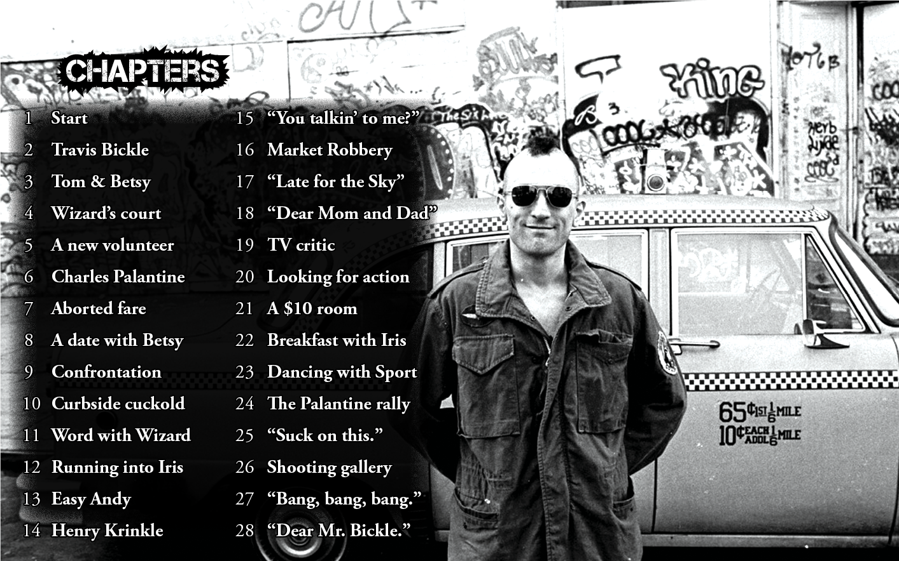
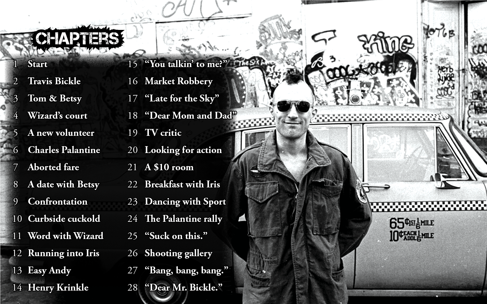

Taxi Driver
You're walking down the streets of New York City and you're magically transported back in time to 1976. The most popular and romanticized city on earth looks much darker in the twilight of it's future fame.
Uber chic Saks Fifth Avenue is now a grimey run-down porn theatre with daily matinee specials. Violent pimps and their underage prostitutes accost you on Broadway. Time Square's bright lights fade and long shadows of tweakers and dealers now stalk the littered sidewalks.
This is the atmosphere oozing from every steamy sewer grate in Taxi Driver.
Requirements:
capture the dark and gritty nature of the film, showcase the characters over the actors, feature DeNiro on cover and disc
 
